地政学
ホーチミンは正式首都ではないが、南部デルタ、港湾、外資、金融、人材を握るベトナム最大の経済都市だ。カンボジア国境、メコン流域、南シナ海航路と近く、国家の成長戦略を実務面から支える要衝だ。都市外交も担う。

🇻🇳 ベトナム / アジア / World City Atlas
サイゴン川、港湾、工場、金融、戦争記憶、市場、カフェ、移民労働が重なるベトナム最大の商都。南部デルタと世界市場を結び、成長の速度と生活の負荷を同時に見せる都市です。
都市の骨格
ホーチミンは旧サイゴンの中心街、チョロンの商業、サイゴン川沿いの港湾、郊外工業団地、トゥードゥックの新しい都市開発を一つの成長圏として結びます。
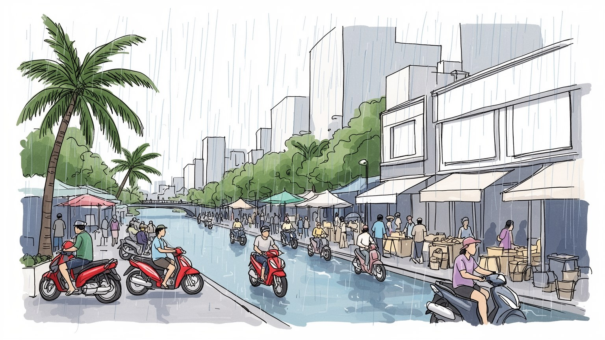
ホーチミンは正式首都ではないが、南部デルタ、港湾、外資、金融、人材を握るベトナム最大の経済都市だ。カンボジア国境、メコン流域、南シナ海航路と近く、国家の成長戦略を実務面から支える要衝だ。都市外交も担う。
銀行、港湾、製造、IT、観光、不動産、物流、大学、医療が集中し、郊外工場と中心部サービス業が通勤圏で結ばれる。地方出身の若者、販売員、配達員、技術者、家事労働者が都市の速度を支える。家賃と通勤も重い。
仏教寺院、カトリック教会、華人会館、祖先祭祀、カオダイ教やホアハオ教の影響が重なり、市場と食文化を彩る。旧サイゴンの記憶、戦争の傷、映画、音楽、カフェ文化も南部の開放性を形作る。世代の対話も結ぶ。
ベンタイン市場、戦争証跡博物館、中央郵便局、川辺の高層街区、屋台、路地カフェは訪問者を引き寄せる。住民には渋滞、浸水、家賃、大気汚染、低賃金労働が日常課題として重なる商都だ。格差も街に映る。生活も読む。
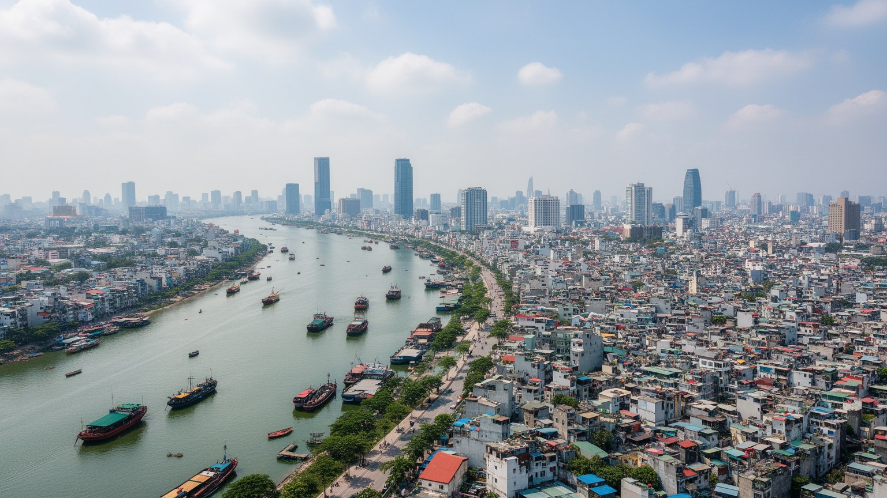
ホーチミンの都市構造は、サイゴン川とドンナイ川水系、メコンデルタへ続く低地、港湾、幹線道路によって形作られています。中心の一・三・五区には旧サイゴンの行政、商業、住宅、観光が集まり、川の東側ではトゥードゥック市の新しい都市開発、大学、技術産業が伸びます。南や西には湿地、運河、倉庫、工場、住宅地が広がり、雨季の水位と排水能力が生活を左右します。川は景観の背景ではなく、港、物流、洪水、土地価格、再開発を動かす実務的な軸です。低地に急速な人口流入が重なったため、豪雨時の浸水、道路の冠水、排水路の詰まりは通勤、学校、商売に直結します。高層ビルや川辺の遊歩道が都市の新しい顔を作る一方、運河沿いの住宅や市場は水と近すぎる暮らしの危うさを抱えます。ホーチミンを読むには、中心部の華やかさだけでなく、川を渡る橋、港へ向かうトラック、低地の住宅、郊外工業地帯まで同じ地図に置く必要があります。水辺の開発が進むほど、誰が安全な土地に住み、誰が浸水しやすい場所へ残されるのかが都市の公平性を示します。さらに、橋とトンネルの位置は通勤時間、地価、学校選び、救急搬送を変えます。水辺を楽しむ都市像は、排水と避難を支える地味なインフラなしには成立しません。川を背にした生活は、都市の便利さと脆さを同時に教えます。毎日の通勤にも響きます。
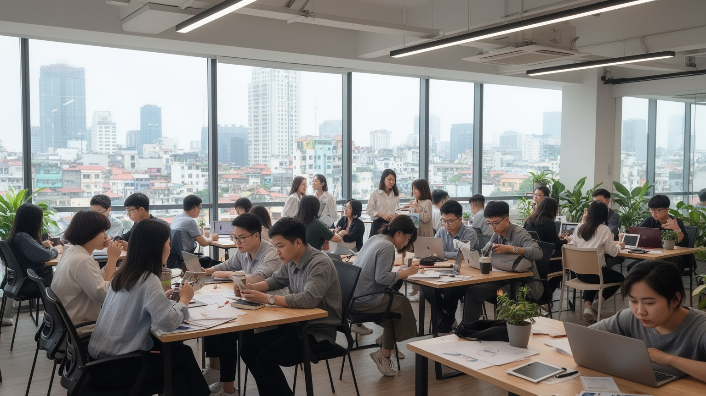
ホーチミンは若い人口と市場の近さを背景に、ベトナムのスタートアップ、教育、実務的な人材育成を引き寄せています。トゥードゥック市には大学、研究施設、技術企業、国際的な投資の期待が集まり、中心部では金融、広告、物流、電子商取引、配車、決済、飲食、観光を結ぶ新しい仕事が生まれます。英語、プログラミング、会計、デザイン、マーケティングを学ぶ学校や短期講座は、地方出身の若者が都市で上昇するための入口です。ただし、起業の明るさだけを見れば都市を誤ります。小さな会社は資金調達、家賃、法規制、人材の流出に悩み、学生や若い技術者は高い生活費と長い通勤に直面します。国際企業で働く人、カフェで勉強する学生、夜に配達をする若者、家族へ送金する工場労働者は、同じ成長都市の違う面を生きています。教育とスタートアップを読むことは、ホーチミンが単に安い労働力の都市から、知識とサービスを組み合わせる都市へ変わろうとしている過程を見ることです。その変化が広い層へ届くには、奨学金、公共交通、手頃な住宅、技能訓練、女性が働き続けられる環境が欠かせません。大学と企業の距離が近いほど、研究成果は早く仕事になりますが、学費や語学力の差も大きな機会の差になります。挑戦しやすい都市であるほど、失敗しても生活を立て直せる制度が必要です。
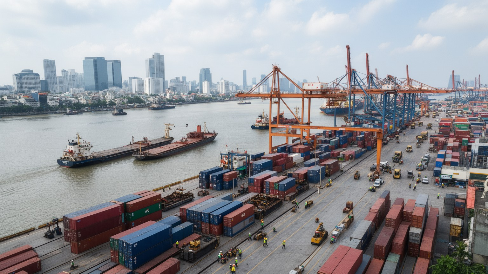
ホーチミンの港湾と物流は、都市をベトナム南部の生産圏へ結びつける大きな装置です。サイゴン川沿いの港、カットライ港、周辺省の工業団地、空港、幹線道路は、電子部品、衣料、家具、食品、機械、消費財を内外へ動かします。中心部の古い港湾機能は再開発の圧力を受け、コンテナ物流はより外側へ広がりますが、都市の道路には今もトラック、バイク便、倉庫、卸売、修理、食堂が密集します。物流は景気の数字ではなく、納期、燃料費、渋滞、税関手続き、倉庫賃料として現場に現れます。港の混雑や道路の冠水は、工場の稼働、輸出価格、店頭の在庫まで影響します。新しい高速道路や環状道路、ロンタイン国際空港への期待は大きいものの、建設中の負担や土地収用、既存住民の移転も見逃せません。ホーチミンの物流を読むことは、世界市場に接続する便利さと、その接続を支える労働者の時間を読むことです。荷役、運転、倉庫、通関、清掃、食堂、警備の仕事が連続し、港の効率は都市生活の条件と切り離せません。港湾都市の近代化は、貨物の速さだけでなく、周辺の空気、道路安全、住環境を改善できるかで評価されます。深夜の搬入や早朝の出荷は、観光客の見ない時間に都市を動かします。物流の背後には、家族の生活時間を削る長い待機と細かな調整があります。港は都市の胃袋でもあります。
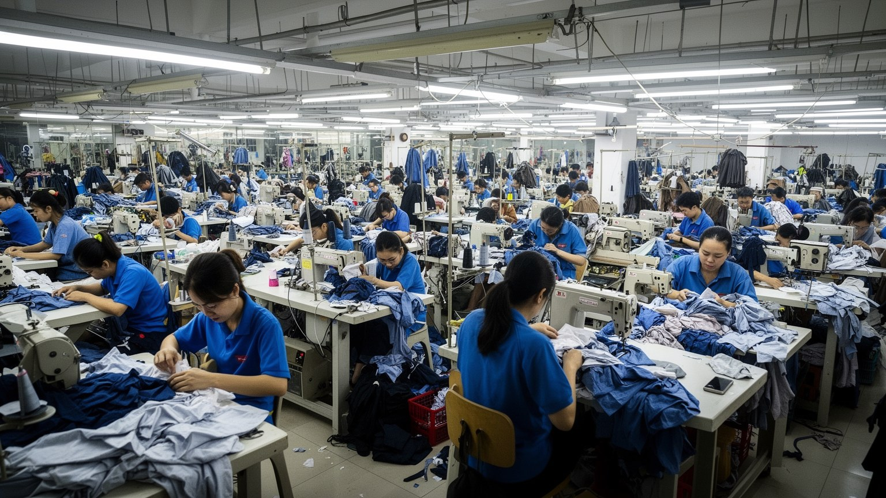
ホーチミンの産業は、中心部の金融や観光だけでなく、郊外と周辺省に広がる製造業によって支えられています。縫製、靴、電子部品、食品加工、包装、家具、機械、印刷、倉庫がサプライチェーンを作り、若い労働者をメコンデルタや中部、北部から呼び込みます。工場で働く人びとは寮や安い賃貸住宅に住み、休日には中心部の市場、教会、寺院、カフェ、送金窓口を利用します。生産現場の労働時間、残業、通勤、保育、健康、労働組合の力は、輸出都市の見えにくい条件です。中心部では販売員、ホテル従業員、調理人、清掃員、配達員、配車運転手が観光と消費を支えます。工場とサービス業は別々ではなく、同じ移住者の家計の中でつながります。景気が悪くなると残業が減り、家賃や食費を払うために副業や非公式な仕事へ移る人もいます。ホーチミンの成長を読むには、外資の投資先としての魅力だけでなく、労働者が都市で生活を築けるかを見る必要があります。技能訓練、安定した賃金、女性労働者の安全、保育、医療、住宅が整わなければ、都市の競争力は長続きしません。輸出の成功は、製品の数ではなく、働く人が将来を描ける環境を伴って初めて社会の力になります。地方の家族へ送る仕送りは、都市で働く意味を支えます。だから労働条件の改善は、都市だけでなく出身地の生活にも波及します。
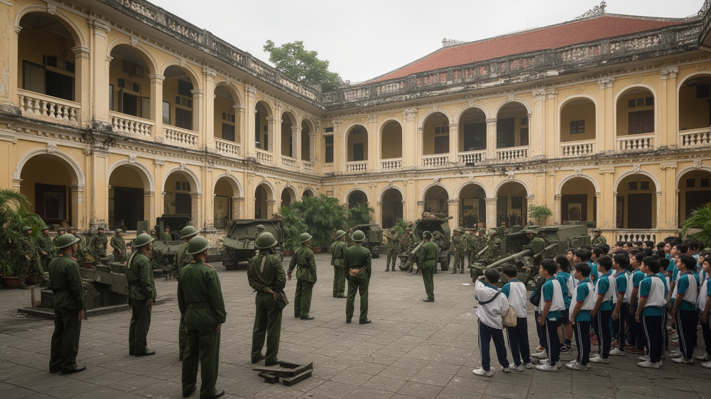
ホーチミンには、旧サイゴンとしての記憶と統一後の社会主義国家の記憶が重なります。統一会堂、戦争証跡博物館、旧大統領府周辺、植民地期の建築、米軍関係の痕跡、難民と移住の記憶は、観光名所であると同時に現代ベトナムの政治的な物語を支える場所です。戦争の説明は一つの展示で完結せず、家族史、海外越僑、退役軍人、都市に残った人、地方から来た若者の記憶の中で異なる響きを持ちます。旧名サイゴンは今も日常の呼び名として広く使われ、商業、音楽、料理、文学の中で都市の感覚を残しています。政治的には、国家統一の象徴である一方、市場経済の実験と外資導入を最も強く進めてきた都市でもあります。この二重性がホーチミンの個性です。過去を読むことは、戦争を遠い歴史として消費することではなく、都市の家族、海外移住、住宅、土地、教育、記念碑に残る影響を見ることです。観光客が博物館を訪れる時、その背後には国家が何を記憶し、何を強調し、どの痛みを語りにくくしているかという問題があります。ホーチミンの戦争記憶は、悲劇の展示であると同時に、再建と商業の都市がどのように過去と共存しているかを示します。記憶は政治的な展示だけでなく、家族の沈黙や海外との送金、帰省の言葉にも残ります。そこに都市の複雑さがあります。名前の使い分けにも、親しみと歴史認識が表れます。
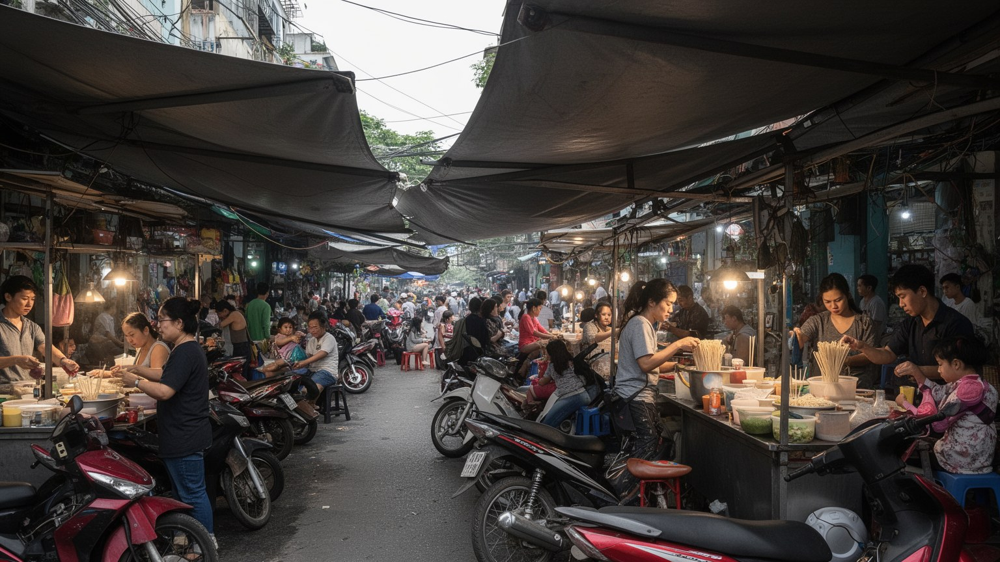
ホーチミンの市場文化を理解するには、中心部のベンタイン市場だけでなく、五区を中心とするチョロンを見る必要があります。チョロンは華人商人、会館、寺院、卸売、漢方、食材、布、雑貨、物流が重なる地区で、南部ベトナムと中国系ディアスポラ、メコンデルタ、カンボジア方面の商業を結んできました。市場は観光の色彩だけではなく、信用、親族関係、言語、宗教行事、仕入れ、配送、女性商人の働きによって動きます。朝の荷ほどき、屋台の仕込み、寺院での祈り、旧正月の飾り、葬送や祖先祭祀は、商売と生活が分かれていないことを示します。ベンタイン周辺では土産物や飲食が観光客を迎え、ローカルな市場では家計の節約と近所づきあいが続きます。近代的なスーパーや宅配が広がっても、市場は価格交渉、鮮度、信用、情報交換の場として重要です。一方で、再開発、衛生規制、家賃上昇、観光化は小さな店の居場所を狭めます。ホーチミンの食と市場を読むことは、南部の開放性を味で楽しむだけでなく、移民、民族、宗教、商業の長い関係を見ることです。フォー、フーティウ、バインミー、コムタム、甘い飲み物、海鮮料理は、街路の労働と家族経営に支えられています。市場が残ることは、都市の柔軟な生活基盤が残ることでもあります。食卓の値段は物流と為替にも揺れ、家計の感覚を通じて世界経済が街に届きます。
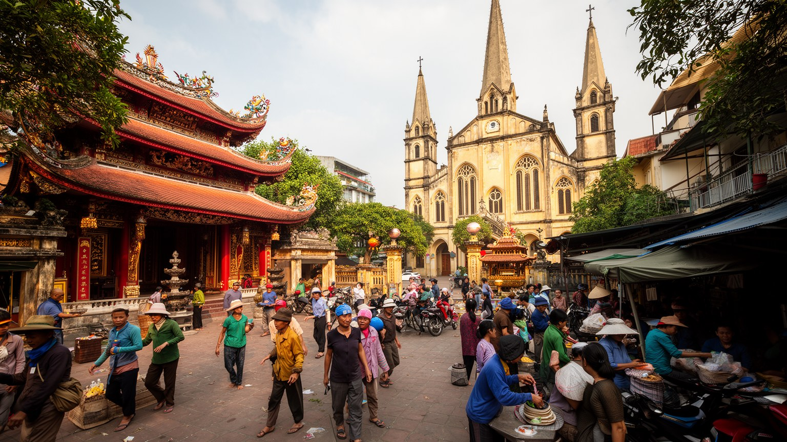
ホーチミンの宗教生活は、仏教寺院、カトリック教会、華人会館、家庭の祖先祭壇、民間信仰、カオダイ教やホアハオ教の影響が重なってできています。植民地期の大聖堂や中央郵便局周辺は観光の象徴ですが、教会は今も移住者、学生、家族、慈善活動の拠点です。寺院や会館では商売繁盛、家族の健康、試験、旧正月、祖先祭祀が生活のリズムを整えます。南部は多様な宗教運動と移住の歴史を持ち、メコンデルタから来た人、華人、北部や中部出身者、海外から戻る人がそれぞれの信仰や習慣を都市に持ち込みます。信仰は私的な祈りだけでなく、互助、教育、医療支援、食事、職探し、葬儀を支える社会的な網でもあります。一方で、都市化によって古い共同体の土地や会館、墓地、路地の祭礼は再開発の圧力を受けます。ホーチミンの宗教を読むには、観光名所としての建物だけでなく、朝の供え物、寺院前の屋台、日曜ミサの混雑、家族の祭壇まで見る必要があります。経済都市の速さの中で、信仰は人が都市に根を張るための時間を作ります。祈りの場は、地方から来た若者が孤立を避け、同郷者や親族とつながる場所にもなります。都市の多様性は、こうした小さな共同体の支えによって日常化しています。儀礼の暦は商売の繁忙期や家族の送金とも結びつき、信仰は経済生活の外側ではなく内側にあります。
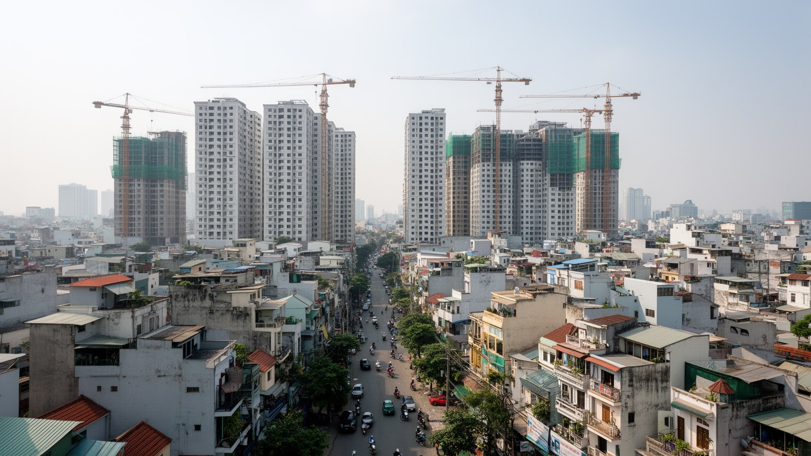
ホーチミンの住宅風景は、細いヘムと呼ばれる路地、古い集合住宅、商住混在のチューブハウス、新しい高層マンション、郊外のゲーテッドコミュニティ、工場労働者の賃貸部屋が混ざり合っています。中心部の路地では、家の前が調理、洗濯、修理、会話、バイク駐車の場所になり、近所の関係が生活の安全網になります。再開発は老朽住宅や浸水リスクを改善する可能性を持ちますが、家賃と土地価格を押し上げ、長く住んだ人を郊外へ追い出すこともあります。高層マンションは設備や防犯を提供する一方、管理費、通勤、学校、買い物、地域のつながりを別の形に変えます。地方出身の労働者や学生は、狭い部屋を共有し、仕送り、食費、通勤費を慎重に調整しながら都市に残ります。住宅問題は建物の新旧ではなく、誰が仕事の近くに住めるか、誰が洪水や火災に弱い場所へ残るか、誰が公共サービスへアクセスできるかという問題です。ホーチミンの都市更新を見ると、経済成長の成果と生活の不安が同じ道路沿いに現れます。美しい高層街区だけでは、都市を支える販売員、配達員、工場労働者、清掃員の住まいは見えてきません。住宅政策は、商都の競争力と住民の尊厳を結ぶ最も具体的な課題です。住所は学校や医療、仕事の紹介にも影響し、住まいの不安定さは都市参加の不安定さになります。家は都市で働く権利の土台です。
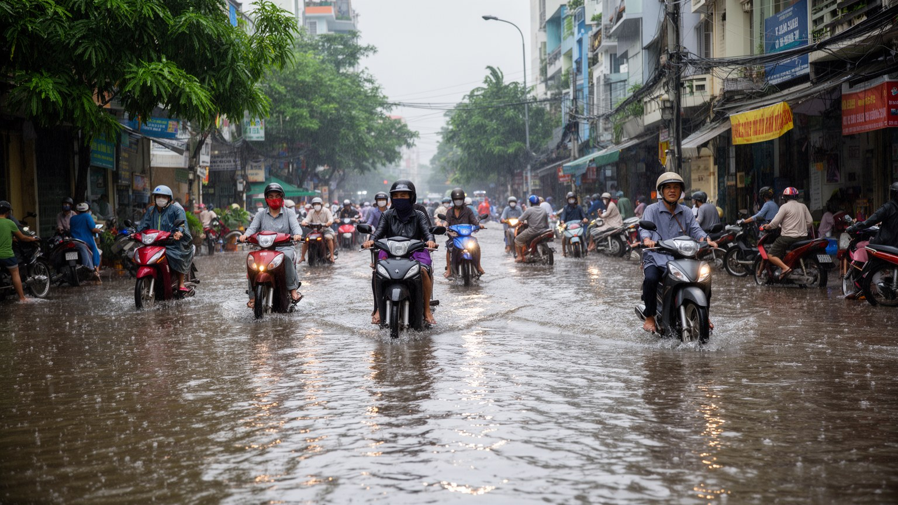
ホーチミンは熱帯の低地都市であり、雨季の豪雨、潮位上昇、河川の増水、排水不良、地盤沈下、都市の舗装化が重なることで浸水リスクを抱えます。道路が水に沈むと、通勤、学校、商売、病院への移動、物流がすぐ滞ります。低所得地区や運河沿いの住宅ほど水害に弱く、床上浸水、汚水、感染症、家財の損失が家計を直撃します。暑さも重要です。屋外で働く配達員、建設労働者、露店商、警備員は、日陰や休憩、水分を確保しにくく、熱ストレスの影響を受けやすいです。高層化と交通量の増加は、風の通り道や大気の質にも影響します。気候対策は堤防やポンプだけでは足りません。排水路の維持、運河の再生、湿地の保全、公共交通、緑地、涼める公共空間、住宅の改修、早期警報、多言語情報が組み合わさって初めて生活を守ります。ホーチミンの環境問題は、都市の景観を整える話ではなく、誰が水と熱の負担を受け、誰が安全な場所へ移れるかという社会問題です。経済成長が続くほど、環境の弱さを先送りする余地は小さくなります。川と低地の都市であることを認め、開発の速度を生活の安全と合わせることが求められます。気候への備えは大規模事業だけでなく、排水路をふさがない日常管理、地域の見守り、安い住宅の改修にもかかっています。水と暑さへの対応は、貧困対策でもあります。これは急務です。
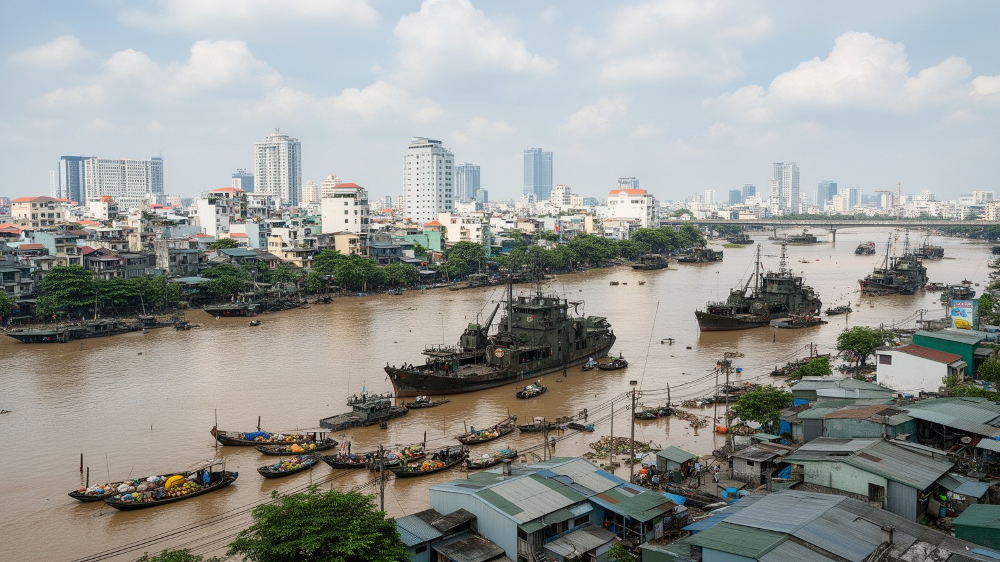
ホーチミンは、ベトナムの成長を最も速い速度で見せる都市です。川と港、工場と金融、戦争記憶と観光、華人街と市場、寺院と教会、路地住宅と高層街区、バイクと都市鉄道が一つの都市圏で重なります。首都ハノイが国家の制度と歴史の正統性を示すなら、ホーチミンは取引、起業、移住、消費、外資、都市更新を通じて現代ベトナムの実験場になります。その魅力は、商業の明るさや料理の豊かさだけではありません。地方から来た若者が働き、家族へ送金し、信仰や同郷のつながりで孤立を避けながら生活を作る力にもあります。同時に、家賃、渋滞、浸水、大気汚染、低賃金、再開発による移転は、成長都市の負担をはっきり示します。ホーチミンを読むことは、世界市場に開かれた都市がどのように富を生み、どの労働に依存し、どの記憶を抱え、誰に環境リスクを押しつけているかを読むことです。中心部の高層ビル、チョロンの市場、川沿いの倉庫、路地のカフェ、工場へ向かうバスは、別々の場面ではなく同じ都市の連続した仕組みです。成功と不安を同時に見ることで、ホーチミンは単なる商都ではなく、東南アジア都市化の現在を理解する入口になります。都市の未来は、投資を集める力だけでなく、低地の安全、働く人の住まい、記憶を抱えた公共空間を守れるかにかかっています。そこに世界都市としての成熟が表れます。